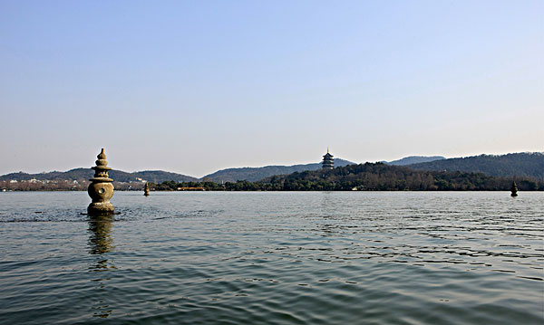
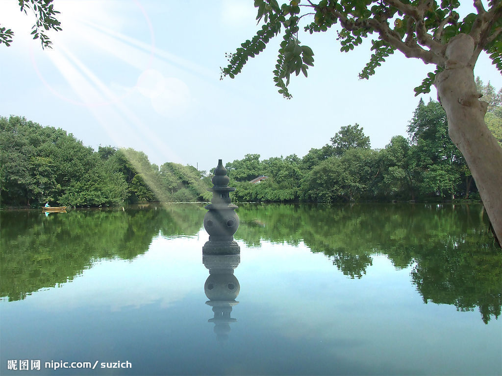
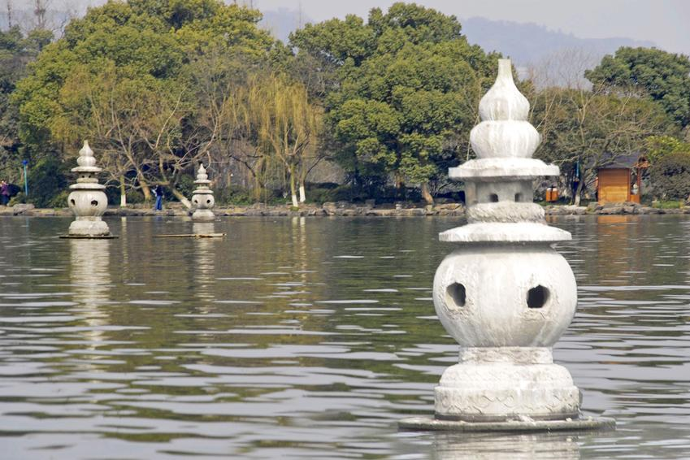
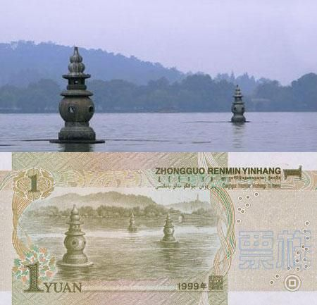

三潭印月，是浙江杭州西湖十景之一，被誉为“西湖第一胜境”。三潭印月是西湖中最大的岛屿，风景秀丽、景色清幽，尤三潭印月的景观享誉中 外。主要景点有“开网亭”、“闲放台”、“先贤祠”、“迎翠轩”、“花鸟厅”、“我心相印亭”、“曲桥”、“九狮石”等。
岸上金桂婆娑，柳绿花明，与雕栏画栋的建筑相映成趣。具有湖中有岛，岛中有湖，园中有园，曲回多变，步移景新的江南水上庭园的艺术特色。 人民币一元纸币的背面采用三潭印月的盛景，可见三潭印月在我国风景名胜中也占据极其重要的标志作用。
三潭印月岛与湖心亭、阮公墩鼎足而立合称“湖中三岛”，犹如我国古代传说中的蓬莱三岛，故又称小瀛洲。俯瞰整个小瀛洲犹如一个硕大的“田” 字。小瀛洲上有开网亭、亭亭亭、九狮石、闲放台、迎翠轩、我心相印亭等园林建筑点缀其间。绿树掩映、花木扶疏。湖岸垂柳拂波，水面亭榭 倒影;园林富于空间层次变化，造成“湖中湖”、“岛中岛”、“园中园”的境界。
岛南湖中建成有三座石塔，相传为苏东坡在杭疏浚西湖时所创设(现有石塔为明代重建)。而有趣的是塔腹中空，球面体上排列着五个等距离圆洞， 若在月明之夜，洞口糊上薄纸，塔中点燃灯光，洞形印入湖面，呈现许多月亮，真月和假月其影确实难分，夜景十分迷人，故得名“三潭印月”。
从岛北码头上岸，经过先贤祠等两座建筑，即步入九曲平桥，桥上有开网亭、迎翠亭、花架亭、御碑亭，康熙御碑亭，我心相印亭四座造型各异的 亭子，让人走走停停，歇歇看看，或谈笑，或留影，流连观照，饱览美景。九曲桥东，隔水与一堵白粉短墙相望。墙两端了无衔接，形若屏风。 但粉墙上开启四只花饰精美的漏窗，墙内墙外空间隔而不断，相互渗透。墙外游人熙熙攘攘，墙内却幽雅宁静，咫尺之间兀自大异其趣。尤三潭印 明月的景观享誉中外。
据说三潭印月园地是明万历三十五年（公元1607年）以湖泥堆积而成，周围环形堤埂筑于万历三十九年。清雍正五年（公元1727年），南北连以 曲桥，东西系以柳堤。面积7公顷，俯视呈田字形，素以“湖中有岛，岛中有湖”的水上园林而著称。洲上有“开网”、“亭亭”、“迎翠”、“闲放”、 “我心相印”等亭、榭、楼、台，石桥曲折有致，漏窗空灵深远，花木扶疏，倒影迷离，置身其间，有一步一景，步移景异之趣。以一管窥青天。
三潭印月南北有曲桥相通，东西以土堤相连桥堤呈“十”字形交叉，将岛上水面一分为四水面外围是环形堤埂。从空中俯瞰，岛上陆地形如一个特大的 “田”字，呈现出湖中有岛，岛中有湖，水景称胜的特色在西湖十景中独具一格，为我国江南水上园林的经典之作。三潭印月岛的前身是水心保宁寺。
瀛洲美景还从岛上向湖上延伸。岛南湖面，有三座石塔，塔高约2.5米，露出水面约2米，由基座、圆形塔身、宝盖、六边小亭、葫芦顶组成。三座 瓶形小石塔鼎足而立，造型别致优美。塔顶如葫芦状，塔身呈球形，高出水面二米，中空，环塔身分布五个小圆孔，塔基为扁圆石座。
三塔平面呈等边三角形分布，每边长六十二米。每逢仲秋时，皓月当空，水天相映，塔中点燃蜡烛，与明月上下争辉。赏月游湖者摇浆前来，搅动 满湖银辉，寄托无限的悠思，怡然忘归。
苏轼疏浚西湖后，为了显示湖泥再度淤积情况，在堤外湖水三个最深处立了三座瓶形石塔以示标记，形成“湖中有深潭，明月印水渊，石塔来相照， 一十八月圆”的奇异景致。
中秋之夜，园中的工人会乘船到达三个塔，并在每个塔中心点上一支蜡烛，圆形的洞放出了蜡烛的光芒，远看像月亮一样，而每个石塔有五个洞， 而三个石塔总共可映印出十五个月亮，加上倒影三十个，加上还有天上一个，倒影一个，最后一个嘛，是游人的心中月。三十三个月亮这一奇异景致， 只有在月朗天清的中秋之夜才能观赏到。
在中秋月明之夜，到西湖泛舟，领略“烟笼寒水月笼纱”的美境是最惬意的事。三个石塔，亭亭玉立在碧波荡漾的湖面上。灯光从塔中透出，宛如一 轮轮明月，倒影在湖中。皓月当空时，月光、灯光和湖光交相辉映，月影、塔影、云影相互映衬，画出一幅“一湖金水欲溶秋”的美景，让人流连往返。 此时的空中月、水中月、塔中月与赏月人的心中月相辉映，神思遄飞，一向为游客所心仪，三潭印月因此得名。
由于三潭印月的美丽景色，我国将它的形象放在了钱币上。最先是七十年代末的外汇兑换券1元，正面就是翠绿色的三潭印月图案；然后第五套人民 币的一元纸币的背面风景也采用了几乎一样的图案——水中的三座石塔。因此，三潭印月的名气大增。